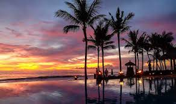

My Bali
Wikipedia linkBali (/ˈbɑːli/) is a province of Indonesia and the westernmost of the Lesser Sunda Islands. East of Java and west of Lombok, the province includes the island of Bali and a few smaller neighbouring islands, notably Nusa Penida, Nusa Lembongan, and Nusa Ceningan to the southeast. The provincial capital, Denpasar is the most populous city in the Lesser Sunda Islands and the second-largest, after Makassar, in Eastern Indonesia. The upland town of Ubud in Greater Denpasar is considered Bali's cultural centre. The province is Indonesia's main tourist destination, with a significant rise in tourism since the 1980s. Tourism-related business makes up 80% of its economy.t
Bali is the only Hindu-majority province in Indonesia, with 86.9% of the population adhering to Balinese Hinduism. It is renowned for its highly developed arts, including traditional and modern dance, sculpture, painting, leather, metalworking, and music. The Indonesian International Film Festival is held every year in Bali. Other international events held in Bali include the Miss World 2013, 2018 Annual Meetings of the International Monetary Fund and the World Bank Group and 2022 G20 summit. In March 2017, TripAdvisor named Bali as the world's top destination in its Traveller's Choice award, which it also earned in January 2021
Bali is part of the Coral Triangle, the area with the highest biodiversity of marine species, especially fish and turtles.In this area alone, over 500 reef-building coral species can be found. For comparison, this is about seven times as many as in the entire Caribbean. Bali is the home of the Subak irrigation system, a UNESCO World Heritage Site. It is also home to a unified confederation of kingdoms composed of 10 traditional royal Balinese houses, each house ruling a specific geographic area. The confederation is the successor of the Bali Kingdom. The royal houses are not recognised by the government of Indonesia; however, they originated before Dutch colonisation.
- Sun
- Ocean
- Summer
